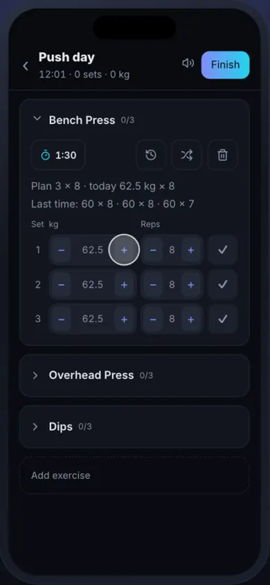
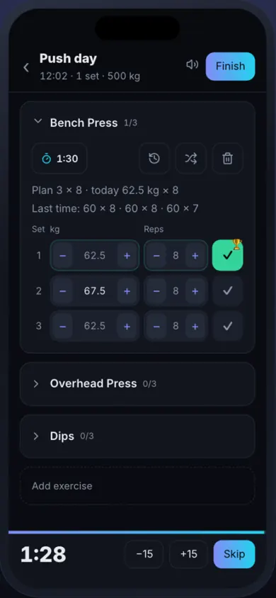
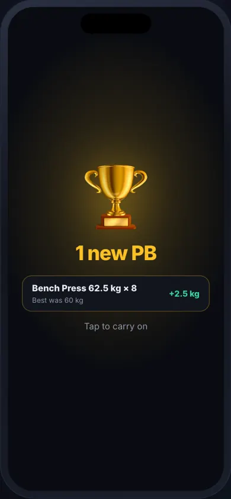
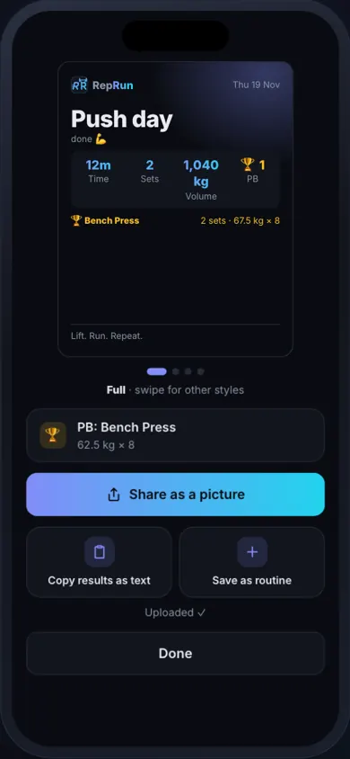
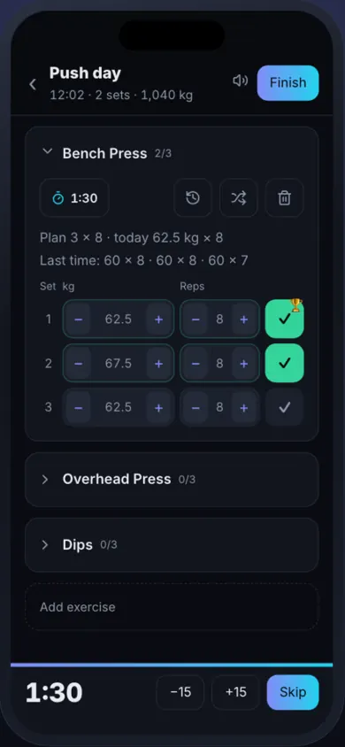
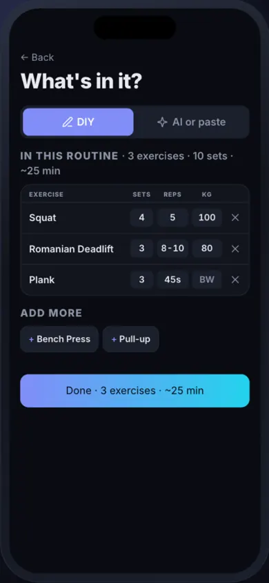
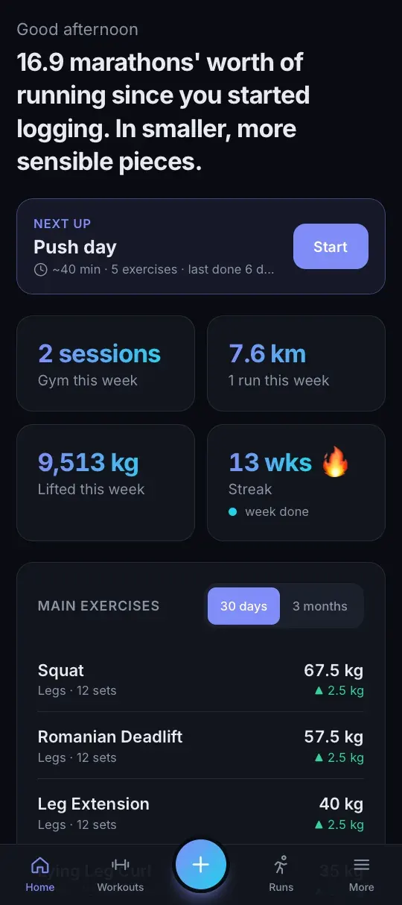

Kept for later (2026-11-19). Option 3 is the one that shipped; 1, 2 and 5 are liked too. Frames are screenshots of the website's live demos, made-up numbers.
Each is shown in a copy of the hero. Today's hero flicks through seven still screenshots with a caption each. The frames below are real: screenshots of the website's own live demos (made-up numbers). On the site, anything moving would play only while on screen, stop at the first touch, and stay still with Reduce Motion.
Tick a set, rest is timed, beat last time, the PB moment, share it. The caption above the phone follows each beat; the dashes are the beats. Recommended.
Log your lifting and your running in one place. Paste in a plan from your PT or ChatGPT, watch your PBs climb, and keep every bit of it on your own phone.





Good: the first thing people see is the app's best moment, moving. Reuses the tested demo code. Watch: ~15 s before the loop repeats; the slideshow's other screens (Runs, Year, Backup) move to the strip lower down.
Same story, paused at the key moment: the PB set's ✓ pulses gold with "Tap ✓ — that's a PB". Tap it and you get the trophy and confetti yourself. Nobody taps in ~4 s, the finger does it.
Log your lifting and your running in one place. Paste in a plan from your PT or ChatGPT, watch your PBs climb, and keep every bit of it on your own phone.
Good: people feel the PB moment themselves in the first 10 seconds: the strongest pull to "Open the app". Watch: a little more to build than 1 (a waiting step and a timeout); the bubble must not cover the numbers.
The range at a glance: a workout in progress, building a routine, the share-picture finish. The side phones float gently; the middle comes forward on hover (or swipe on a phone).
Log your lifting and your running in one place. Paste in a plan from your PT or ChatGPT, watch your PBs climb, and keep every bit of it on your own phone.

Good: looks premium; shows three features at once. Watch: nothing actually happens unless each runs its own loop (heavier on phones); on a phone screen only one fits, so it falls back to 1 or the slideshow.
The actual app on a real iPhone: log a set, the rest buzz, the PB, the share picture. Like the "add to home screen" clip in the app's intro. Auto-plays muted, loops.
Log your lifting and your running in one place. Paste in a plan from your PT or ChatGPT, watch your PBs climb, and keep every bit of it on your own phone.
Good: smoothest and most convincing ("that's really the app"); no code to maintain. Watch: needs a recording session on your phone with the demo data; ~1–2 MB of video; not interactive; re-record when screens change.
Keep the seven screenshots and captions, and give each a small movement: here the finger taps Start on Next up and the session count ticks up; on Exercises a PB number rises; on Runs the chart grows.
Log your lifting and your running in one place. Paste in a plan from your PT or ChatGPT, watch your PBs climb, and keep every bit of it on your own phone.

+1 sessionGood: quickest; keeps the tour of every screen. Watch: still mostly pictures; the movement is decoration rather than the app doing something.
My pick: 2 (which includes 1). The hero becomes the app's best moment, and people do it themselves. Second: 4, if you'd rather show the real phone than an HTML copy.